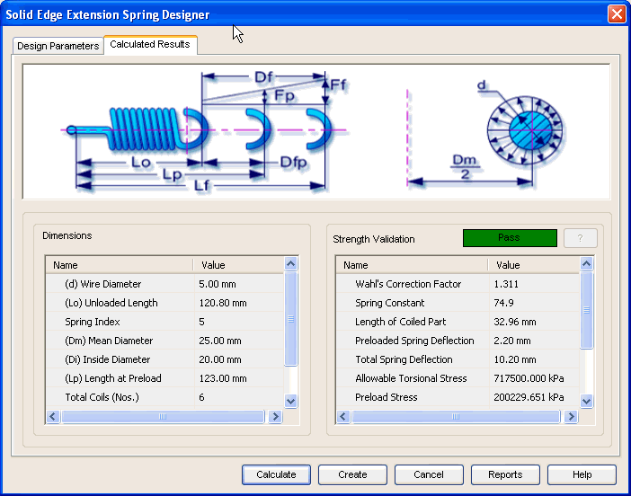

Extension Spring Calculated Results tab
The Calculated Results tab provides the options you use to view results of calculation. This tab has two areas:

Dimensions
Displays the input provided for calculation and a few general results for the extension spring.
Strength Validation
Displays the overall performance of the extension spring in terms of Pass/Fail. You can also review the allowable stresses of the spring displayed in this area.